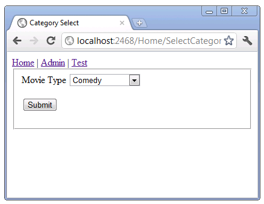
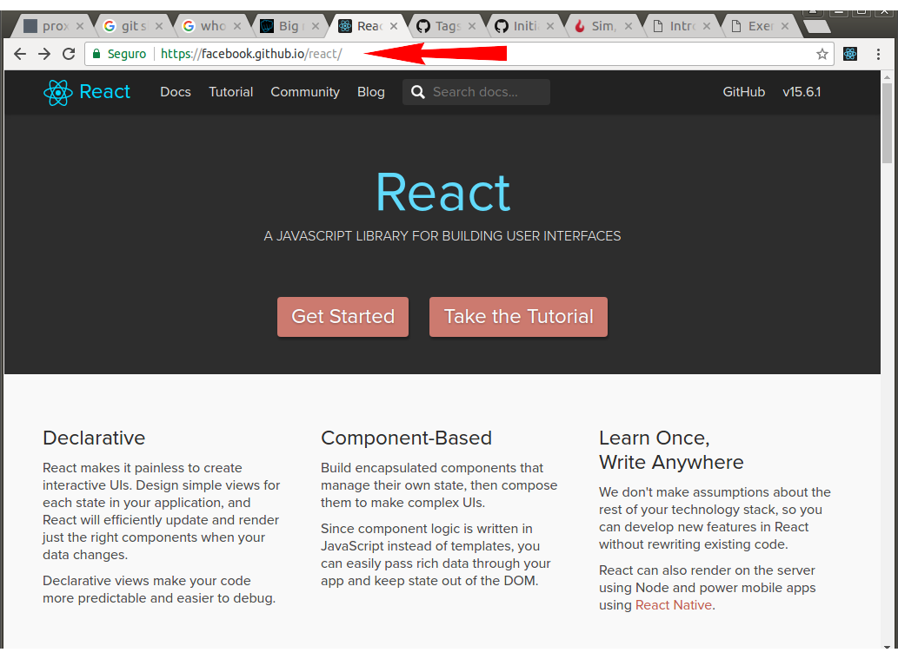
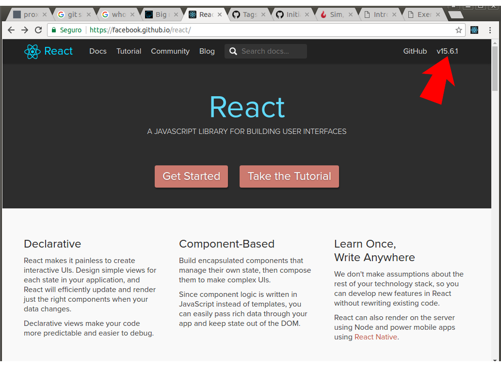
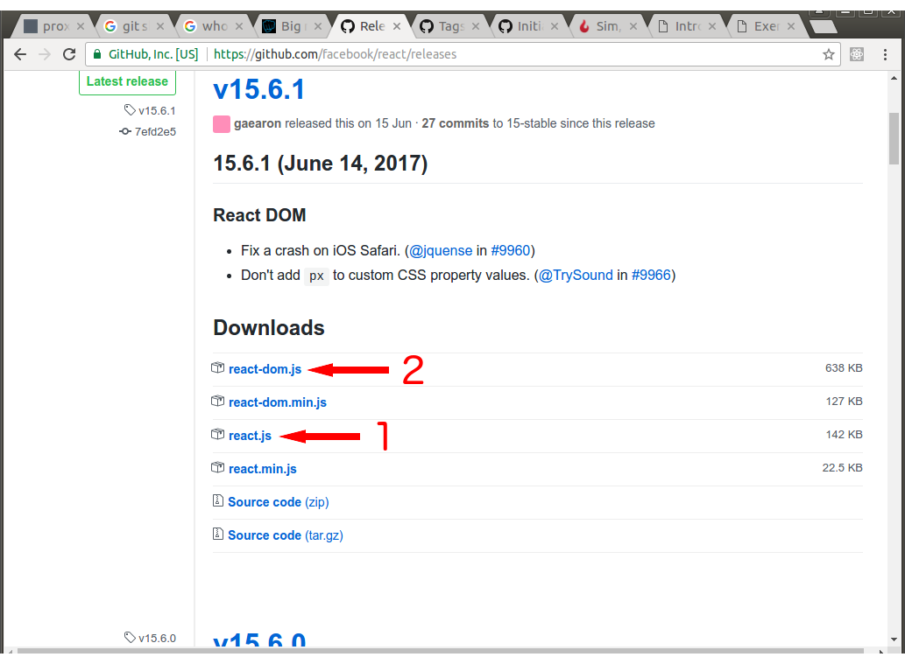

React.JS
Agenda
- Introdução
- Instalação
- Rumo ao componente
- JSX e ES2015
- Próximos capítulos
- Agradecimentos
- "Biblioteca em JavaScript para construção de UI"
- Coesa - única responsabilidade é cuidar da UI
- Amadurecida: versão atual v15.6.1, primeiro
release feito em 29/Mai/2013 - Farta documentação, tutoriais, exemplos e vídeos
no site www.reactjs.com
Tem projetos grandes usando?
- Netflix, Facebook, Instagram
- WhatsApp Web, Dropbox, Atlassian
- Uber, Yahoo! Mail, KhanAcademy
- Amazon AWS e outros
Tá bom pra você?
Ah! Biblioteca para construção de UI???
Então eu vou ter....
Algo assim?
Ou assim????
Vai depender de ...
- Requisitos
- Usuário
- Custo
- Criatividade
React te dá meios pra chegar lá!!
Mas toda UI começa pelos componentes...
Suporta Single Page Application

Demonstração de SPA
github.com/s1dn3y/react-spa-demo
Oferece performance com Virtual DOM

E normalização entre browsers através dos Synthetic Events
- Encapsula os eventos dos navegadores
- Dispensa o uso de código de verificação para
contornar diferenças entre os navegadores - addEventListener ou attachEvent ??
- event ou window.event ??
- event.target ou event.srcElement ??
Instalação e uso
Entrar na página do React
Clicar no link para o repositório
Salvar react.js e react-dom.js no teu projeto
Exemplo 1
O que veremos?
- Como usar o React no projeto
- O bom e velho Olá Mundo!
Rumo ao componente
Componentes são:
- A base para a construção de UIs
- Parametrizavéis
- Reutilizáveis
Exemplo 2
O que veremos?
- Parametrização de elementos (as propriedades)
- Indo além do Olá Mundo: Combo de estados
Quais problemas nós vimos?
- Lógica dentro do index.html
- Não é reutilizável
- Tem muito código, seria melhor
codificar em HTML mesmo
Exemplo 3
O que veremos?
- Combo de estados reutilizável
- Mais propriedades
- Introdução ao controle de estado
Quais problemas nós vimos?
- Ainda com muito código (boilerplate)
- Não favorece o trabalho de UI
JSX e ES2015
JSX: Feio, mas nem tanto
- É preprocessado e transformado em JS
- Preprocessamento ocorre no deploy
- Browser roda JS
- Menos verboso que React.createClass
- Favorece o design da UI (ressalvas)
Exemplo 4
O que veremos?
- Olá JSX!
Quais problemas nós vimos?
- Mistura código JS com "HTML"
- Porém, frescura-free galera!!
- Só para os mais atentos: alguém
percebeu um outro problema??
Exemplo 5
O que veremos?
- O browser dando erro
- Babel, XMLHttpRequest e solicitações 'cross origin'
Exemplo 5 II - A missão
O que veremos?
- Liberando 'cross origin' - apenas para
efeito de teste - Combo de estados em JSX
Quais problemas nós vimos?
- defaultValue não funciona mais?
- Boilerplate para fazê-lo voltar
a funcionar...
ES2015: facilidades para o combo de estados
- Muitas novidades: class, extends,
import e muitas outras - spread operator
- arrow functions
- Favorecem o design da UI!!
Exemplo 6
O que veremos?
- Combo de estados anabolizado
- defaultValue funcionando!!
Quais problemas nós vimos?
- Código ES5 misturado com ES2015!!
- React.createClass deprecated na versão 16.0.0
Exemplo 7
O que veremos?
- Calça de veludo ou bumbum de fora
- Combo de estados ES2015!!
- Infelizmente não funciona pelo
Babel standalone porque o browser
não carraga módulos da ES2015
Próximos capítulos
- WebPack
- Flux
- Flow
- Teste
- Aplicação SPA completa
Agradecimentos
Sidney Amaral
sidney.amaral@rio.rj.gov.br
twitter/@s1dn3y
github.com/s1dn3y